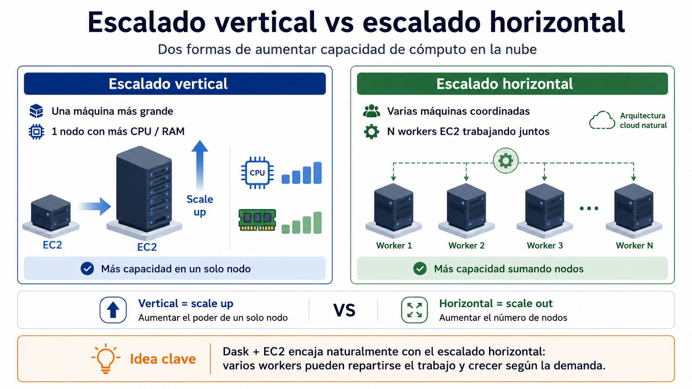
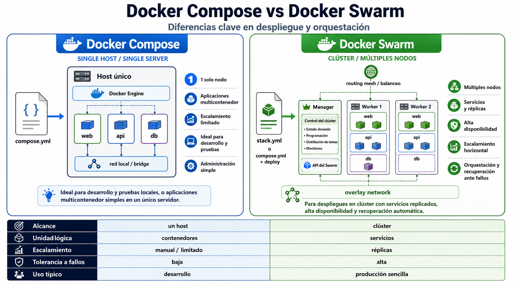

Servicios, réplicas, estado deseado y ejecución distribuida
services:
web:
image: nginx
ports:
- "8080:80"
db:
image: postgres:14Si el host cae, caen todos los contenedores que dependen de él.
Escalar en una sola máquina queda limitado por CPU, memoria, disco y red del host.
El ciclo de vida de contenedores distribuidos exige coordinación entre nodos.
Pregunta clave: ¿cómo mantenemos una aplicación viva, escalable y accesible cuando ya no cabe en un solo host?
Dos formas de aumentar la capacidad de cómputo en la nube:

Orquestar significa pasar de administrar contenedores aislados a declarar el estado esperado de servicios distribuidos.
Crear, detener, borrar y conectar contenedores explícitamente.
Declarar cuántas réplicas deben existir y dejar que el orquestador actúe.
El usuario declara lo que quiere: por ejemplo, un servicio web con tres réplicas. Swarm compara continuamente ese estado deseado con el estado real.
docker service create \
--name web \
--replicas 3 \
-p 8080:80 \
nginxLectura correcta: “quiero que el clúster mantenga tres instancias disponibles del servicio web”.

Declaración lógica: imagen, réplicas, puertos, red y políticas.
Unidad de trabajo que Swarm asigna a un nodo concreto.
Proceso real que ejecuta la task en el host asignado.
Idea clave: en Swarm no pensamos primero en contenedores individuales; pensamos en servicios y réplicas.
Varios nodos Docker coordinados como una unidad lógica.
Asignación de tasks a nodos disponibles según el estado del clúster.
Corrección automática cuando el estado real se aleja del estado deseado.
Acceso al servicio publicado sin depender de conocer la réplica exacta.
Redes virtuales para comunicación entre servicios ubicados en hosts distintos.
Despliegue declarativo de múltiples servicios, redes y volúmenes.
# 1. Crear el cluster
$ docker swarm init
# 2. Crear un servicio
$ docker service create --name web -p 8080:80 nginx
# 3. Escalar el servicio
$ docker service scale web=3
# 4. Observar servicios y tasks
$ docker service ls
$ docker service ps webLa práctica no busca memorizar comandos, sino observar cómo cambia el modelo de operación.
Idea clave: en Swarm pensamos primero en servicios y réplicas, no en contenedores individuales.
Si un servicio fue declarado con 3 réplicas y una de ellas falla, ¿qué debería hacer el orquestador?
¿Debe reiniciar exactamente el mismo contenedor?
Debe restaurar el estado deseado: tres réplicas disponibles del servicio.